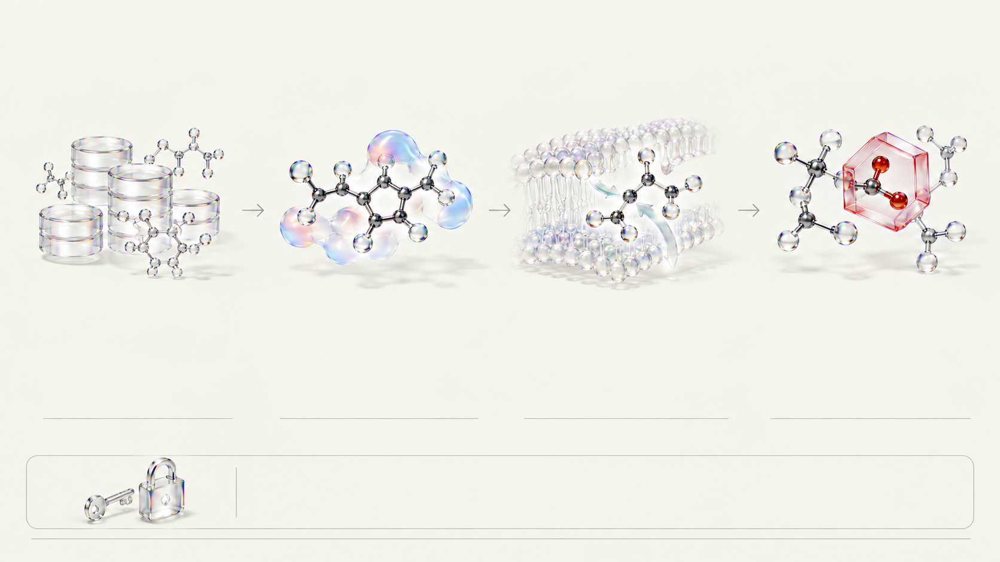

검증된 화합물 도서관
ChEMBL · ZINC
활성 검증 약물 DB(ChEMBL)와 소형 유기화합물 DB(ZINC)를 결합해 표적당 시판약·유도체·다양성 분자 220종 라이브러리를 제공합니다.
표적당 220종 라이브러리

CRISTA · STEP 02 · COMPOUND & PHYSCHEM
후보 분자의 SMILES 구조식을 읽어 체내 투과성, 약다움, 구조 경고를 계산합니다.
ChEMBL · ZINC
활성 검증 약물 DB(ChEMBL)와 소형 유기화합물 DB(ZINC)를 결합해 표적당 시판약·유도체·다양성 분자 220종 라이브러리를 제공합니다.
표적당 220종 라이브러리
RDKit (MW · TPSA · cLogP)
문자열 구조식(SMILES)을 읽어 세포막 통과에 중요한 분자량(MW), 극성 표면적(TPSA), 조각 기반 지용성(cLogP)을 실시간 계산합니다.
BBB 기준 TPSA ≤ 90 Ų
RDKit (Ro5 · QED)
경구약 조건의 기준선 위반 개수를 세는 리핀스키 5규칙(Ro5)과 복합 물성을 0~1점 연속 점수로 종합한 약다움(QED)을 구분해 산출합니다.
Ro5 위반 수 vs QED 0~1
RDKit (PAINS · Brenk · SMARTS)
부분 그래프 매칭(SMARTS)으로 방향족 니트로기 등 비특이적 반응이나 대사 독성 우려가 있는 구조 경고 작용기 포함 여부를 찾아냅니다.
SMARTS 부분 그래프 매칭
QED(0~1 연속 지수)와 Ro5 위반 수는 서로 다른 지표이며, 구조 경고 탐지는 주의 신호일 뿐 실제 인체 독성 확정이 아닙니다.